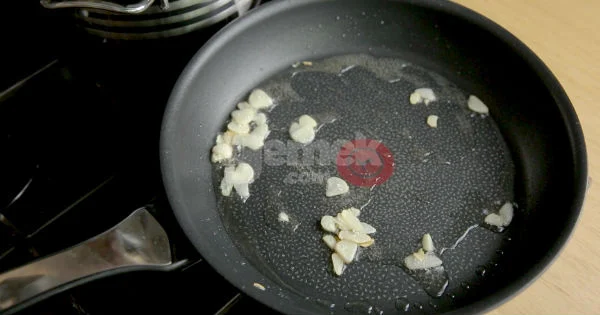
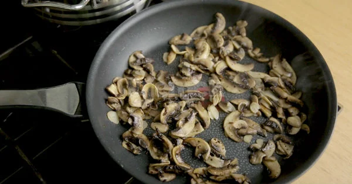
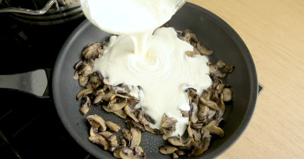
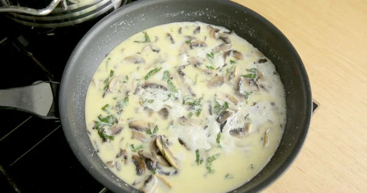
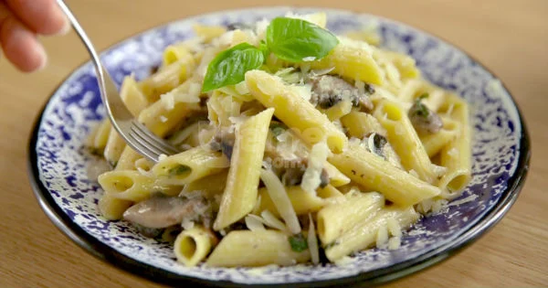

1
su bardağı
su
(makarna haşladığınız suyu da kullanabilirsiniz)
Servisi için:
4
yemek kaşığı
rendelenmiş parmesan peyniri
Kremalı Mantar Soslu Penne Makarna Tarifi Nasıl Yapılır?
Geniş bir tavada 1 yemek kaşığı zeytinyağı ile halka doğranmış 2 diş sarımsağı soteleyin.

300 gram dilimlenmiş mantarları da tavaya alın ve yüksek ateşte sotelemeye devam edin.

Derin bir tencerede 1,5 litre su ile birlikte 1 tatlı kaşığı tuzu kaynamaya bırakın ve üzerine 1 paket penne makarnayı ilave edip 8-10 dakika kadar pişirin.

Sotelenen mantarların üzerine 2 su bardağı krema, yarım çay kaşığı karabiber ve 1 avuç doğranmış fesleğenleri ilave edip kıvam alana kadar pişirin.
Pişen penne makarnayı sosun bulunduğu tavaya ilave edip, yarım su bardağı rendelenmiş parmesan ve 2 yemek kaşığı tereyağını da ekleyip karıştırın.

Son olarak kalan 1 avuç fesleğeni de ekleyip, makarnayı servis tabağına alın ve rendelenmiş parmesan ilavesiyle sıcak olarak servis edin, afiyet olsun!
